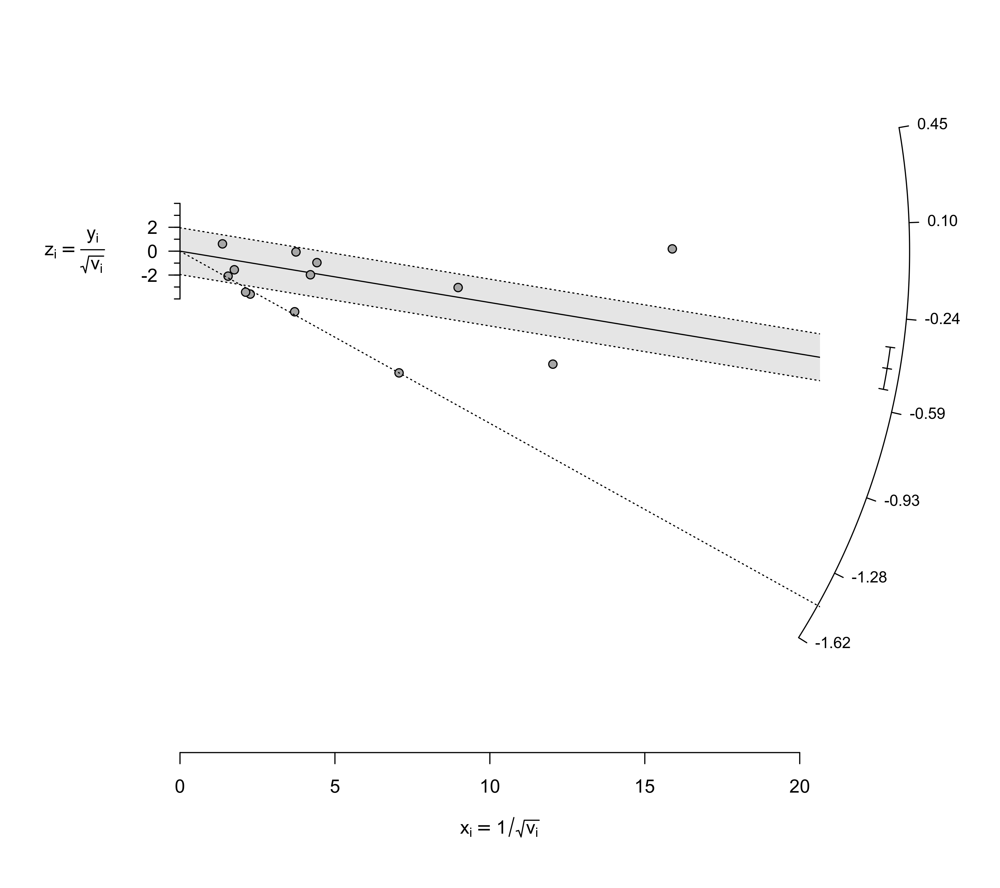
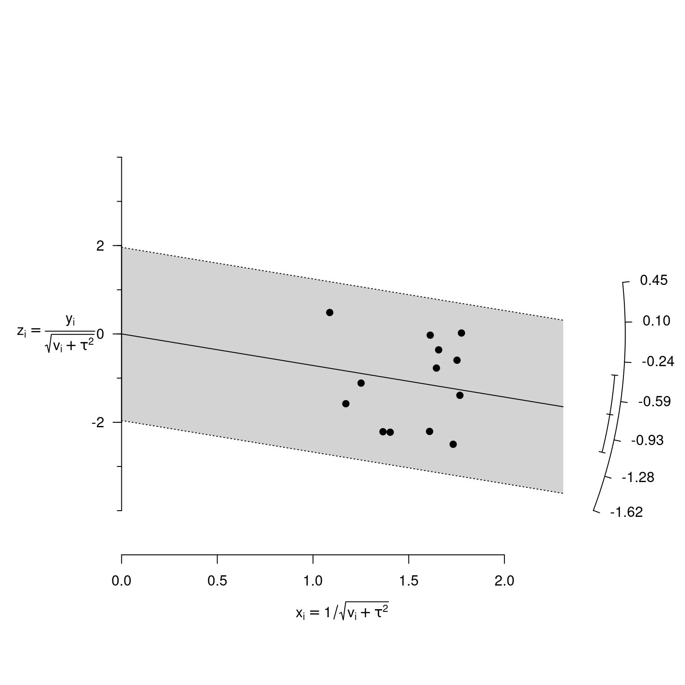

radial.RdFunction to create radial (also called Galbraith) plots for objects of class "rma".
radial(x, ...) galbraith(x, ...) # S3 method for rma radial(x, center=FALSE, xlim, zlim, xlab, zlab, atz, aty, steps=7, level=x$level, digits=2, back="lightgray", transf, targs, pch=19, arc.res=100, cex, ...)
| x | an object of class |
|---|---|
| center | logical to indicate whether the plot should be centered horizontally at the model estimate (the default is |
| xlim | x-axis limits. If unspecified, the function tries to set the x-axis limits to some sensible values. |
| zlim | z-axis limits. If unspecified, the function tries to set the z-axis limits to some sensible values (note that the z-axis limits are the actual vertical limit of the plotting region). |
| xlab | title for the x-axis. If unspecified, the function tries to set an appropriate axis title. |
| zlab | title for the z-axis. If unspecified, the function tries to set an appropriate axis title. |
| atz | position for the z-axis tick marks and labels. If unspecified, these values are set by the function. |
| aty | position for the y-axis tick marks and labels. If unspecified, these values are set by the function. |
| steps | the number of tick marks for the y-axis (the default is 7). Ignored when argument |
| level | numeric value between 0 and 100 to specify the level of the z-axis error region (the default is to take the value from the object). |
| digits | integer to specify the number of decimal places to which the tick mark labels of the y-axis should be rounded (the default is 2). |
| back | color of the z-axis error region. Set to |
| transf | optional argument to specify the name of a function that should be used to transform the y-axis labels (e.g., |
| targs | optional arguments needed by the function specified via |
| pch | plotting symbol. By default, a solid circle is used. See |
| arc.res | integer to specify the number of line segments to use when drawing the y-axis and confidence interval arcs (the default is 100). |
| cex | optional character and symbol expansion factor. If unspecified, the function tries to set this to a sensible value. |
| ... | other arguments. |
For a fixed-effects model, the plot shows the inverse of the standard errors on the horizontal axis against the individual observed effect sizes or outcomes standardized by their corresponding standard errors on the vertical axis. Since the vertical axis corresponds to standardized values, it is referred to as the z-axis within this function. On the right hand side of the plot, an arc is drawn (referred to as the y-axis within this function) corresponding to the individual observed effect sizes or outcomes. A line projected from (0,0) through a particular point within the plot onto this arc indicates the value of the individual observed effect size or outcome for that point.
For a random-effects model, the function uses \(1/\sqrt{v_i + \tau^2}\) for the horizontal axis, where \(v_i\) is the sampling variance of the observed effect size or outcome and \(\tau^2\) is the amount of heterogeneity as estimated based on the model. For the z-axis, \(\sqrt{v_i + \tau^2}\) is used to standardize the individual observed effect sizes or outcomes.
If the model contains moderators, the function returns an error.
A data frame with components:
the x coordinates of the points that were plotted.
the y coordinates of the points that were plotted.
the study id numbers.
the study labels.
Wolfgang Viechtbauer wvb@metafor-project.org http://www.metafor-project.org
Galbraith, R. F. (1988). Graphical display of estimates having differing standard errors. Technometrics, 30(3), 271--281. https://doi.org/10.1080/00401706.1988.10488400
Galbraith, R. F. (1988). A note on graphical presentation of estimated odds ratios from several clinical trials. Statistics in Medicine, 7(8), 889--894. https://doi.org/10.1002/sim.4780070807
Galbraith, R. F (1994). Some applications of radial plots. Journal of the American Statistical Association, 89(428), 1232--1242. https://doi.org/10.1080/01621459.1994.10476864
Viechtbauer, W. (2010). Conducting meta-analyses in R with the metafor package. Journal of Statistical Software, 36(3), 1--48. https://doi.org/10.18637/jss.v036.i03
### calculate log risk ratios and corresponding sampling variances dat <- escalc(measure="RR", ai=tpos, bi=tneg, ci=cpos, di=cneg, data=dat.bcg) dat#> trial author year tpos tneg cpos cneg ablat alloc #> 1 1 Aronson 1948 4 119 11 128 44 random #> 2 2 Ferguson & Simes 1949 6 300 29 274 55 random #> 3 3 Rosenthal et al 1960 3 228 11 209 42 random #> 4 4 Hart & Sutherland 1977 62 13536 248 12619 52 random #> 5 5 Frimodt-Moller et al 1973 33 5036 47 5761 13 alternate #> 6 6 Stein & Aronson 1953 180 1361 372 1079 44 alternate #> 7 7 Vandiviere et al 1973 8 2537 10 619 19 random #> 8 8 TPT Madras 1980 505 87886 499 87892 13 random #> 9 9 Coetzee & Berjak 1968 29 7470 45 7232 27 random #> 10 10 Rosenthal et al 1961 17 1699 65 1600 42 systematic #> 11 11 Comstock et al 1974 186 50448 141 27197 18 systematic #> 12 12 Comstock & Webster 1969 5 2493 3 2338 33 systematic #> 13 13 Comstock et al 1976 27 16886 29 17825 33 systematic #> yi vi #> 1 -0.8893 0.3256 #> 2 -1.5854 0.1946 #> 3 -1.3481 0.4154 #> 4 -1.4416 0.0200 #> 5 -0.2175 0.0512 #> 6 -0.7861 0.0069 #> 7 -1.6209 0.2230 #> 8 0.0120 0.0040 #> 9 -0.4694 0.0564 #> 10 -1.3713 0.0730 #> 11 -0.3394 0.0124 #> 12 0.4459 0.5325 #> 13 -0.0173 0.0714### line from (0,0) with slope equal to the log risk ratio from the 4th study abline(a=0, b=dat$yi[4], lty="dotted")### meta-analysis of the log risk ratios using a random-effects model res <- rma(yi, vi, data=dat) ### draw radial plot radial(res)